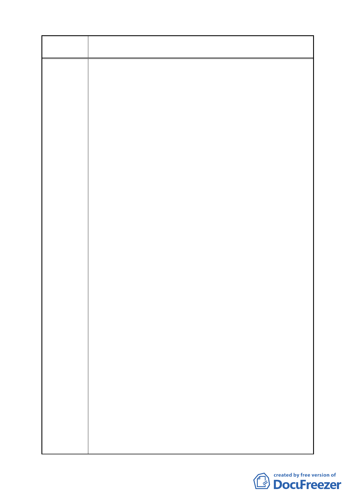

案 名 變更臺北市南港區鐵路地下化沿線土地主要計畫案
小孩上學在附近，這已是我們安身立命的家園。
現在全世界經濟低迷不振、公司搬家、員工搬家，都是
一大筆負擔，要蓋大樓對資訊服務業成本太高，但要租能容
納 1000 人以上的地方也不容易，裝修又要花一大筆費用，
重點是本來有個自己的家，現在卻會變成無殼蝸牛、到處流
浪。相信園區幾十家公司及幾千名員工應該都會跟我們有相
同的遭遇。根留台灣，能在台灣存活的的企業已不容易，留
都留不住，還要趕走，這實在太不合理。
2.趕走這些企業目的是為什麼？就是要清空，做一個大的流行
音樂中心。流行音樂中心是什麼？名稱太大不是很清楚，但
從實務面來看，無非就是創作與表演。音樂創作需要一個集
中的環境嗎？現在的音樂創作都是電腦化，台灣大型傳統錄
音室已很難生存就是明證。其實音樂創作愈來愈個人化。它
不是集中化的創作與管理，創意人嚮往的是自由、無拘無
束、隨手可得、隨處可尋的創作靈感，而非擠在一個地方共
同創作。而且創意人獨立，排他性很強，不是每一個創意人
都願與大家一起生活、一起融合，創意所有的來源都在腦子
裡面，只要一個人腦再加一台電腦，不需要生產設備，也不
需要大的空間，因此提供一個創意工廠或是一個大而舒適的
空間是不符實際的。
在表演面來看，表演更是要親近觀眾，觀眾在全世界每
一個地區，藝人是要到當地去表演，而不是把觀眾集中在一
個地方，藝人為什麼要巡迴演唱，就是要貼近當地的觀眾，
這是自古以來不變的定律。國家音樂廳、小巨蛋主要服務的
是地區型的客群，台灣各地蓋了很多文化中心、表演中心，
但真正使用率有多高？觀眾聚落夠嗎？小巨蛋有天天表演
嗎？國家音樂廳有場場客滿嗎?這些存在的問題還是在藝人
夠不夠實力與觀眾願不願意接受的問題，而不是表演場地硬
體設備夠不夠多、夠不夠好的問題。
3.總之，國家政策的擬定，是要符合民眾的需求，建議決策單
位，應多傾聽創作人的心聲，了解其真正的問題在哪裡？如
何對症下藥，如果沒有把握，也不應貿然做一個大的投資，
應該做一個小規模的試驗，把流行音樂中心由小作大，隨時
配合調整。前任政府幾年前的想法或計劃並不是後面接手的
人就要不計代價、不管成敗來執行，那真正要負責任的應該
是實際執行的人。這不是一塊農地而是必須要迫離多少事
業、家庭、多少人民的生計換來的，如果，這個流行音樂中
- 59 -